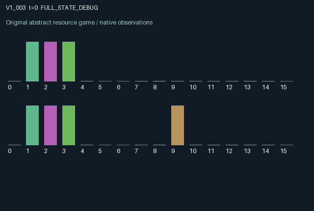

V1_003 / LEGACY_ARRAY
Window v1 · Private revelation and directional mode pressure
Private revelation and directional manipulation of a hidden transition mode.
Release verification episode
Untrained uniform legal actions. Actual JAX state sampled along the full original episode; full-state debug camera. No human performance or learning claim.

Run this game
crucibles play --game v1_003
Start Python locally, then open the address printed by the terminal. Installation, multiplayer, takeover and keyboard controls →
Objective, rewards & ending
Exact task contract
{
"objective": "Private revelation and directional mode pressure; accumulate original per-agent rewards under mechanism.md.",
"natural_termination": "Original t >= 32 horizon.",
"exact_transition_and_reward_source": "def raw_step(self, key, state, actions):\n # 0 wait; 1 privately sense; 2 start mode-0 project; 3 start mode-1 project; 4 push mode toward own index.\n sensing = actions == 1\n pushing = (actions == 4).astype(jnp.float32)\n pressure = jnp.clip(0.65 * state['pressure'] + 0.6 * (pushing[1] - pushing[0]), -1.0, 1.0)\n drift = jax.random.bernoulli(key, 0.08)\n mode = jnp.where(pressure > 0.5, 1, jnp.where(pressure < -0.5, 0, jnp.where(drift, 1 - state['mode'], state['mode']))).astype(jnp.int32)\n mature = state['timer'] == 1\n outcome = jnp.where(mature, jnp.where(state['project'] == mode, 0.8, -0.6), 0.0).astype(jnp.float32)\n starts = (state['timer'] == 0) & ((actions == 2) | (actions == 3))\n timer = jnp.where(starts, 2, jnp.maximum(0, state['timer'] - 1)).astype(jnp.int32)\n project = jnp.where(starts, actions - 2, jnp.where(timer > 0, state['project'], -1)).astype(jnp.int32)\n rewards = jnp.tanh(outcome - 0.12 * sensing - 0.18 * pushing - 0.1 * starts).astype(jnp.float32)\n next_state = {'t': state['t'] + jnp.array(1, jnp.int32), 'mode': mode,\n 'signal': jnp.where(sensing, mode.astype(jnp.float32), state['signal']),\n 'age': jnp.where(sensing, 0.0, jnp.minimum(1.0, state['age'] + 0.1)),\n 'project': project, 'timer': timer, 'pressure': pressure, 'outcome': outcome}\n done_all = next_state['t'] >= 32\n dones = jnp.full((2,), done_all, dtype=jnp.bool_)\n info = {'done_all': done_all, 'legal_mask': self.legal_actions(next_state)}\n return self.observe(next_state), next_state, rewards, dones, info"
}Declared per-step reward bounds: -1.0 to 1.0. Observability: source_defined.
Rules
Original mechanism document (historical status wording retained)
Private revelation and directional manipulation of a hidden transition mode. Projects mature two transitions after initiation and pay according to the mode at completion, not at initiation. A costly probe reveals only the probing agent's post-transition mode and stores an aging private signal. Costly pushes create persistent signed pressure: agent zero pushes toward zero, agent one toward one; sufficient pressure overrides random mode drift. Project types are private while project timers, pressure and realized outcomes are public. The other agent's push can invalidate a stale observation and change a pending project's payoff. Mode, pressure, timers and signal age are bounded. tanh maps finite completion payoffs and action costs into [-1,1]. Randomness uses only the supplied explicit key. Information value, strategic advantage and learning performance remain untested.
Commands
Roles & abilities
agent_0 Original window-v1 agent; abilities and private parameters follow the original mechanism and observe()
agent_1 Original window-v1 agent; abilities and private parameters follow the original mechanism and observe()
Observation permissions
Training receives only the original observation rows. Role cameras use declared visibility; debug cameras are explicitly marked. Local benchmark records log debug exposure and role takeover history.
Exact observation layout
[
{
"slice": [
0,
16
],
"visibility": "exact original observe() below",
"source_code": "def observe(self, state):\n obs = jnp.zeros((2, 16), dtype=jnp.float32)\n obs = obs.at[:, 0].set(state['t'] / 32.0)\n obs = obs.at[:, 1].set(state['signal'])\n obs = obs.at[:, 2].set(state['age'])\n obs = obs.at[:, 3].set(state['project'].astype(jnp.float32))\n obs = obs.at[:, 4].set(state['timer'] / 2.0)\n obs = obs.at[:, 5].set(jnp.roll(state['timer'], 1) / 2.0)\n obs = obs.at[:, 6].set(state['pressure'])\n obs = obs.at[:, 7].set(state['outcome'])\n obs = obs.at[:, 8].set(jnp.roll(state['outcome'], 1))\n obs = obs.at[:, 9].set(jnp.arange(2, dtype=jnp.float32))\n return obs"
}
]Entity visibility & attributes
[]
Actual verification & provenance
Per-game execution receipt
{
"game": "v1_003",
"status": "PASS",
"verification_revision": 2,
"source_sha256": "38e3678ff4e2124f85297d67bd5cb17d94c8dfc54764f8e28929b28909eadd8e",
"seed": 20261101,
"runtime": {
"jax": "0.4.38",
"numpy": "1.26.4",
"devices": [
"TFRT_CPU_0"
]
},
"dimensions": {
"num_agents": 2,
"observation_size": 16,
"num_actions": 5,
"max_steps": 32
},
"checks": {
"eager_reset": {
"status": "PASS",
"seconds": 0.5423665046691895
},
"observation_spaces_legal_masks": {
"status": "PASS",
"seconds": 0.13366031646728516
},
"eager_step": {
"status": "PASS",
"seconds": 0.9837448596954346
},
"jit_reset": {
"status": "PASS",
"seconds": 0.24509406089782715
},
"jit_step": {
"status": "PASS",
"seconds": 0.23309683799743652
},
"eager_jit_integer_parity_float_measurement": {
"status": "PASS",
"seconds": 0.0
},
"jit_vmap_reset": {
"status": "PASS",
"seconds": 0.2835421562194824
},
"jit_vmap_step": {
"status": "PASS",
"seconds": 0.24212169647216797
},
"outer_autoreset_api": {
"status": "PASS",
"seconds": 0.41103291511535645
},
"full_original_horizon_episode_and_render": {
"status": "PASS",
"seconds": 0.910449743270874
}
},
"human_scores": null,
"browser_controls": "PENDING",
"failures": [],
"elapsed_seconds": 4.552583456039429,
"float_parity_max_abs": 0.0,
"numerical_parity": "EXACT",
"raw_terminal_absorbing": "NOT_PART_OF_ORIGINAL_LEGACY_CONTRACT",
"terminal_outer_reset": "PASS",
"episode_steps": 32,
"scripted_random_returns": [
-3.802992604672909,
-0.9318159520626068
],
"terminal": true,
"demo_information": "FULL_STATE_DEBUG",
"demo_frames": 33,
"render_roles_checked": 2
}Chromium control verification
{
"game": "v1_003",
"status": "PASS",
"human_scores": null,
"engineering": true,
"checks": [
"catalog_selected_and_real_native_reset",
"dom_queue_and_native_step",
"second_participant_ownership_and_native_joint_step",
"all_roles_individually_controllable_no_role_cap",
"explicit_debug_camera",
"release_to_pure_ai_without_reset",
"close_session_preserves_log"
],
"ui_sha256": "314c83040b7b2bfaa517fa4b20c9861a6c37a1bc689a6e61179218685c1d47e3",
"keyboard": "NO_LEGAL_CARDINAL_COMMAND_FOR_ROLE0_AT_RESET",
"seconds": 3.6485724449157715
}Original identity and file hashes
{
"id": "v1_003",
"key": "v1_003",
"title": "Window v1 · Private revelation and directional mode pressure",
"summary": "Private revelation and directional manipulation of a hidden transition mode.",
"tags": [
"historical window-v1"
],
"family": "legacy_array",
"dimensions": {
"num_agents": 2,
"observation_size": 16,
"num_actions": 5,
"max_steps": 32
},
"source_sha256": "38e3678ff4e2124f85297d67bd5cb17d94c8dfc54764f8e28929b28909eadd8e",
"manifest_sha256": "1a573ffec04f889db33b25687a80c30024892f3c0de5b69f6d4c296493cf1cdf",
"files": [
{
"file": "candidate.py",
"bytes": 3067,
"sha256": "38e3678ff4e2124f85297d67bd5cb17d94c8dfc54764f8e28929b28909eadd8e",
"origin": "work/exp_2/astra_generation/window_v1/candidate_00003/attempt_00/candidate.py"
},
{
"file": "mechanism.md",
"bytes": 881,
"sha256": "2161e303fa4224dde1e16fd98cc063136509343f6b5a025b2e41910c249b126f",
"origin": "work/exp_2/astra_generation/window_v1/candidate_00003/attempt_00/mechanism.md"
}
],
"original_status": "EARLIER_WINDOW_V1_SOURCE",
"original_namespace": "astra_generation/window_v1",
"original_proposal_index": 3,
"original_saved_replay": false,
"release_validation": "PASS",
"human_scores": null,
"browser_validation": "PASS"
}